图解CSS: Grid布局（Part11）
作者：大漠 日期：2021-07-14 点击：441
特别声明：如果您喜欢小站的内容，可以点击申请会员进行全站阅读。如果您对付费阅读有任何建议或想法，欢迎发送邮件至: airenliao@gmail.com!或添加QQ：874472854(^_^)
* 文本为付费内容（4.99元），您已获得全文阅读权限
既然 CSS Grid 布局已经来到我们的身边，我们开始在网上看到越来越多的类似于杂志式的 Web 布局：
这并不是不可能的，如果你经常关注 Codepen 的话，你会发现在该平台上有很多类似杂志式的布局。这一切都是有原因的： 它们干净、可读、有吸引力，而且令人熟悉。甚至说，在未来的某一天（这个时间不会太久），你就会接到这样的需求，创建一个类似杂志的布局。 CSS Grid 的到来，让这一切已变得非常的容易，因为 CSS Grid 是一个非常强大的布局系统（通过前面的学习，或许你已经有感知了），可以用于创建复杂、独特的二维布局。
而一个类似杂志式的布局有着其自身最大的特征，尤其是使用 CSS Grid 构建一个杂志式的布局更是如此：
- 将 Web 内容组织成一个结构良好的网格
- 用重叠的网格项目来突破网格
对于这两点，CSS Grid 都占有绝对的优势，在 CSS Grid 布局中，我们可以使用网格项目的重叠和定位，使用偏移（inset，即top、right、bottom 和 left）、负边距（margin）和变换（transform）来构构建。但是，在 CSS Grid 中，可以使用更有 逻辑性、 可读性 的属性和值来建立定位叠加的元素。接下来的内容，我们将围绕着这方面来展开。
网格项目的重叠
我们先从网格项目的重叠开始聊。
欲让网格项目重叠，则必须把网格项目放置在相同的网格单元格中。 在 CSS Grid 中有四种不同的方法可以达到这个目的：
- 使用网格线索引号
- 使用命名的网格线
- 使用命名的网格区域
- 合并网格单元格（即，跨越网格项目）
我们通过一些简单的示例来展示和帮助大家更好的理解网格项目的重叠。比如，我们在网格容器上使用下面的代码，创建一个 3 x 3 （即三行三列）的网格：
.grid__container {
display: grid;
grid-template-columns: 220px 1fr 220px;
grid-template-rows: min-content auto min-content;
gap: 20px;
}
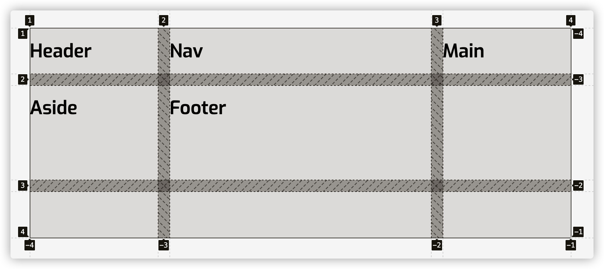
让我们把
- 网格项目
header放在第一行 - 网格项目
footer放在第三行 - 网格项目
nav放在第一列，并且让其和网格项目header在左上角重叠（第一行第一列），和网格项目footer在左下角重叠（第三行第一列） - 网格项目
main在第二行第二列 - 网格项目
aside放在第三列，并且让其和网格项目header在右上角重叠（第一行和第三列），和网格项目footer在右下角重叠（第三行第三列）
先使用网格线索引号方式来实现。
如果你学习过前面的内容，应该知道，grid-template-columns和grid-template-rows在定义网格轨道尺寸的同时也自动为每条网格线进行了编号，以数字1开始，以网格轨道数加1结束。
header {
grid-row-start: 1;
grid-row-end: 2;
grid-column-start: 1;
grid-column-end: 4;
// 也可以简写成
grid-row: 1 / 2;
grid-column: 1 / 4;
// 也等同于
grid-area: 1 / 1 / 2 / 4;
}
nav {
grid-row-start: 1;
grid-row-end: 4;
grid-column-start: 1;
grid-column-end: 2;
// 也可以简写成
grid-row: 1 / 4;
grid-column: 1 / 2;
// 也等同于
grid-area: 1 / 1 / 4 / 2;
}
main {
grid-row-start: 2;
grid-row-end: 3;
grid-column-start: 2;
grid-column-end: 3;
// 也可以简写成
grid-row: 2 / 3;
grid-column: 2 / 3;
// 也等同于
grid-area: 2 / 2 / 3 / 3;
}
aside {
grid-row-start: 1;
grid-row-end: 4;
grid-column-start: 3;
grid-column-end: 4;
// 也可以简写成
grid-row: 1 / 4;
grid-column: 3 / 4;
// 也等同于
grid-area: 1 / 3 / 4 / 4;
}
footer {
grid-row-start: 3;
grid-row-end: 4;
grid-column-start: 1;
grid-column-end: 4;
// 也可以简写成
grid-row: 3 / 4;
grid-column: 1 / 4;
// 也等同于
grid-area: 3 / 1 / 4 / 4;
}
示例中的网格项目使用了grid-row（或grid-row-[start|end]）、grid-column（或grid-column-[start|end]）或grid-area属性根据网格线的索引号明确的指定了放置位置。从上面的示例效果中不难发现：
- 网格项目
nav分别和网格项目header（网格的左上角单元格）以及网格项目footer（网格的左下角单元格）重叠 - 网格项目
aside分别和网格项目header（网格的右上角单元格）以及网格项目footer（网格的右下角单元格）重叠
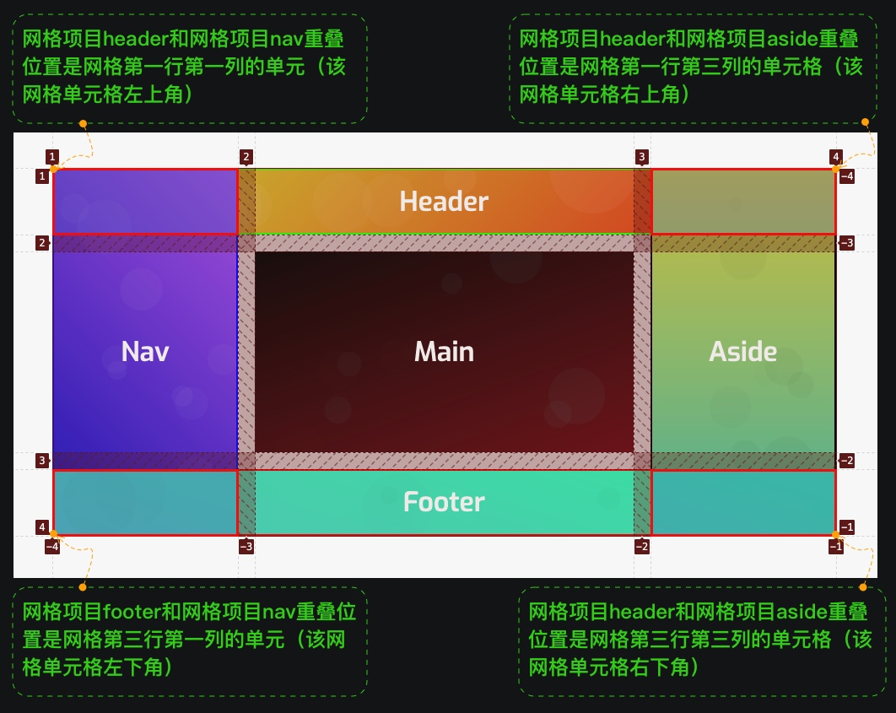
在grid-row、grid-column 和 grid-area 属性上使用自动的网格线索引号（即，创建网格系统时自动生成的网格线索引编号）是很直接的，但这种方式不具语义化。如果在使用 Grid 布局时，可能会大量大改变你的网格系统，比如使用 CSS Grid 实现一个响应式布局，甚至只是在你工作时改变你的想法，这种数字索引编号的网格线名称就会变得难以操作。
因此，我们可以使用 网格系统自动生成的数字索引号网格线，而是自己给网格线命名，并且使用自定义网格线的名称来放置网格项目。比如，在上面的示例中的 grid-template-columns 和 grid-template-rows 在显式指定网格轨道尺寸的同时给网格线命名：
.grid__container {
display: grid;
grid-template-columns: [header-start nav-start footer-start] 220px [nav-end main-start] 1fr [main-end aside-start] 220px [header-end aside-end footer-end];
grid-template-rows: [header-start] min-content [header-end nav-start main-start aside-start] auto [nav-end main-end aside-end footer-start] min-content [footer-end];
gap: 20px;
}
这个时候自定义命名的网格线名称如下图所示：
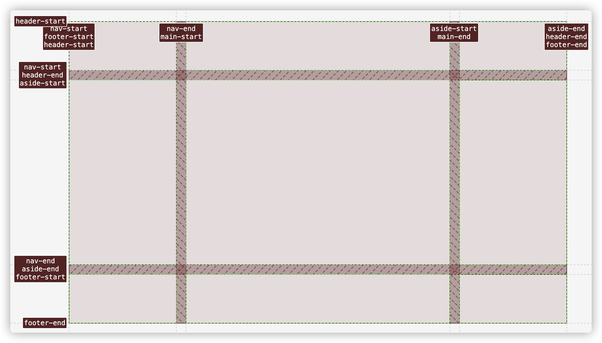
使用自定义命名的网格线名称来替代上面示例中数字索引网格线名称：
header {
grid-area: header-start / header-start / header-end / header-end;
// 等同于
grid-area: header-start / nav-start / header-end / aside-end;
}
nav {
grid-area: header-start / nav-start / footer-end / nav-end;
}
main {
grid-area: main-start / main-start / main-end / main-end;
}
aside {
grid-area: header-start / aside-start / footer-end / aside-end;
}
footer {
grid-area: footer-start / footer-start / footer-end / footer-end;
}
达到了上例相同的效果。
其实，在这个示例中，我们还创建了隐式的网格区域，在网格项目中使用grid-area可以直接引用这些隐式创建的网格区域，比如：
header {
grid-area: header;
}
nav {
grid-area: nav;
}
main {
grid-area: main;
}
aside {
grid-area: aside;
}
footer {
grid-area: footer;
}
只不过这个示例中的网格项目并没有重叠在一起。
反过来同样也能成立，即 在网格容器上显式使用 grid-template-areas 显式声明网格区域的同时也会创建以网格区域名称为前缀，以-start和-end命名的网格线名称。比如：
.grid__container {
display: grid;
grid-template-columns: 220px 1fr 220px;
grid-template-rows: min-content auto min-content;
grid-template-areas:
"header header header"
"nav main aside"
"footer footer footer";
gap: 20px;
}
上面的代码创建以网格区域命名的隐式网格线：
此时，在网格项目中使用隐式的网格线名称也可以明确的指定网格项目位置，同样能让网格项目重叠：
header {
grid-area: header
}
nav {
grid-area: header-start / nav-start / footer-end / nav-end;
}
main {
grid-area: main-start / main-start / main-end / main-end;
}
aside {
grid-area: header-start / aside-start / footer-end / aside-end;
}
footer {
grid-area: footer;
}
在 CSS 网格系统中，还可以在grid-row、grid-column 和 grid-area 中使用关键词 span 来显式指定合并单元格的数量。在合并单元格时，很容易让网格项目相互重叠。同样拿上面的示例来举例，看span怎么实现同样的效果。
.grid__container {
display: grid;
grid-template-columns: 220px 1fr 220px;
grid-template-rows: min-content auto min-content;
gap: 20px;
}
你也可以显式给网格线命名。这里不再提供示例代码。我们要实现的效果：
- 网格项目
header从网格的第一行第一列的第一个单元格开始，向右合并了三列，我们可以使用grid-column: 1 / span 3 - 网格项目
nav从网格的第一行第一列的第一单元格开始，向下合并了三行，我们可以使用grid-row: 1 / span 3 - 网格项目
aside从网格的第一行第三列的第一个单元格开始，向下合并了三行，我们可以使用grid-row: 1 / span 3 - 网格项目
footer从网格的第三行第一列的第一个单元格开始，向右合并了三列，我们可以使用grid-column: 1 / span 3
即：
header {
grid-row: 1;
grid-column: 1 / span 3
}
nav {
grid-column: 1;
grid-row: 1 / span 3;
}
aside {
grid-column: 3;
grid-row: 1 / span 3;
}
footer {
grid-row: 3;
grid-column: 1 / span 3;
}
最终达到我们所想要的效果：
在使用 span 来让网格项目重叠时需要确保网格项目上指定了你想要：
- 在
grid-row上使用span合并行时，要显式使用grid-column指定列 - 在
grid-column上使用span合并列时，要显式使用grid-row指定行
不然网格自动放置算法会让网格项目向右或向下移动，造成网格单元格的空缺，而且不会让网格项目重叠在一起。
在 CSS 网格系统中，除了使用明确指定网格项目位置的相关属性（grid-row、grid-column和grid-area）之外，还可以使用 margin 和 transform 的translate()让网格项目相互重叠。比如：
.grid__container {
display: grid;
grid-template-columns: 220px 1fr 220px;
grid-template-rows: min-content auto min-content;
gap: 20px;
}
header {
grid-row: 1;
grid-column: 1 / span 3;
}
nav {
margin-top: -60px;
z-index: 2;
margin-bottom: -60px;
margin-right: -60px;
}
aside {
transform: translate(-50px, -50px);
z-index: 2;
margin-right: -50px;
margin-bottom: -110px;
}
footer {
grid-row: 3;
grid-column: 1 / span 3;
}
有了这些特性，我们就可以很容易实现像下图这样的布局效果：
实现上图效果所需要的代码：
<!-- HTML -->
<main>
<header>
<h1>
Portraits of
<br />
American women
</h1>
<h2>Dorothea Lange</h2>
</header>
<section></section>
<figure>
<img src="https://picsum.photos/800/800?random=1" alt="">
</figure>
<figure>
<img src="https://picsum.photos/800/800?random=2" alt="">
</figure>
<figure>
<img src="https://picsum.photos/800/800?random=3" alt="">
</figure>
<figure>
<img src="https://picsum.photos/800/800?random=4" alt="">
</figure>
</main>
关键的CSS代码：
main {
display: grid;
grid-template-columns: 2fr 1fr 1fr 2fr;
grid-template-rows: 2fr 1fr 1fr 2fr;
max-width: 80vmin;
}
header,
section {
grid-row: 2 / 4;
grid-column: 2 / 4;
align-self: center;
z-index: 2;
}
section {
background-color: #fff;
z-index: 1;
clip-path: polygon(50% 0%, 100% 50%, 50% 100%, 0% 50%);
aspect-ratio: 1 / 1;
}
figure:nth-of-type(1) {
grid-row: 1 / 3;
grid-column: 1 / 3;
align-self: end;
}
figure:nth-of-type(2) {
grid-row: 1 / 3;
grid-column: 3 / 5;
align-self: end;
}
figure:nth-of-type(3) {
grid-row: 3 / 5;
grid-column: 1 / 3;
}
figure:nth-of-type(4) {
grid-row: 3 / 5;
grid-column: 3 / 5;
}
稍作调整，还可以实现下面这样的效果：
使用 z-index 控制堆栈的顺序
在《CSS定位和层叠控制》和《聊聊CSS中的层叠相关概念》 两篇文章中都提到过：
“在 Web 系统中，Web 坐标系统中
z轴用来表示元素是层叠（Stacked）的。表示的是用户与屏幕的距离”。
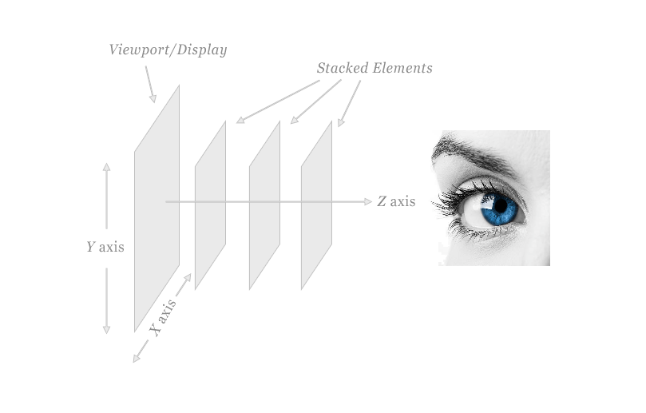
通常，浏览器会按照CSS规范中指定的特定顺序放置元素：
在DOM树中最先出现的元素被放在首位，之后出现的元素被放在前面的元素之上。但它并不总是那么简单。只有当页面上的所有元素是自然流才起作用。也就是说，当没有元素在流中的位置被改变或者已经脱离文档流，才起作用。
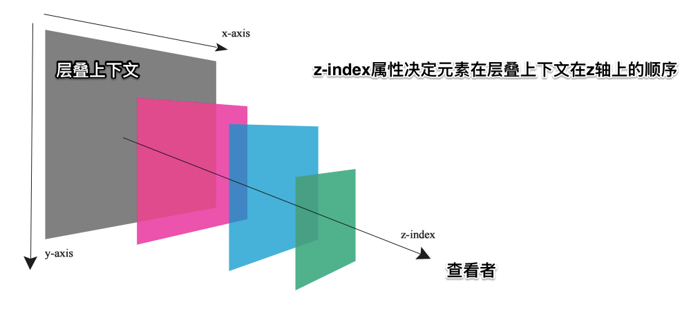
而且，文档中的层叠上下文由满足以下任意一个条件的元素形成：
- 根元素 (HTML)
z-index值不为auto的position是非static- 一个
z-index值不为auto的 Flex 项目 (Flex item)，即：父元素display: flex|inline-flex opacity属性值小于1的元素transform属性值不为none的元素mix-blend-mode属性值不为normal的元素filter、perspective、clip-path、mask、mask-image、motion-path值不为none的元素perspective值不为none的元素isolation属性被设置为isolate的元素- 在
will-change中指定了任意 CSS 属性，即便你没有直接指定这些属性的值 -webkit-overflow-scrolling属性被设置touch的元素- ...
我们回到 CSS 网格布局系统中来，你可能已经发现了上面的示例中，网格项目nav 和 网格项目aside 分别和网格项目header与网格项目footer有重叠，并且：
- 网格项目
nav和网格项目aside盖在网格项目header上面 - 网格项目
footer又盖在网格项目nav和网格项目aside上面
这是因为，我们的HTML文档结果是：
<body>
<header></header>
<nav></nav>
<main></main>
<aside></aside>
<footer></footer>
</body>
越往下的DOM元素，其z轴的值就越大。当我们人为改变DOM结构顺序时，它们默认的层叠顺序（z轴的顺序）也将相应调整：
对于很多前端开发者而言，z-index 可以控制元素在z轴的顺序，并且只有在position值为非static时才生效，事实上并非如此。在 CSS 中有多种方式能触发z-index起作用（正如前面所言）。而在 CSS Grid 布局系统中，每个网格项目都可以显式设置z-index的值来改变其在z轴上的顺序。比如，上面的示例中，我们希望网格项目header和网格项目footer位于网格项目nav和网格项目aside上面，只需要：
header,
footer {
z-index: 1;
}
注意，
z-index值越大，越在z轴的上面。
现在你知道在网格系统中怎么让网格项目重叠了，并且向大家展示了两个简单的布局效果（使用网格项目重叠）。在介绍网格项目重叠开始，提到过，利用网格项目的重叠，可以实一些类似杂志类的布局效果。比如下面这个效果：
可以将上图这样的杂类效果的布局分解成一个网格，如下图所示：
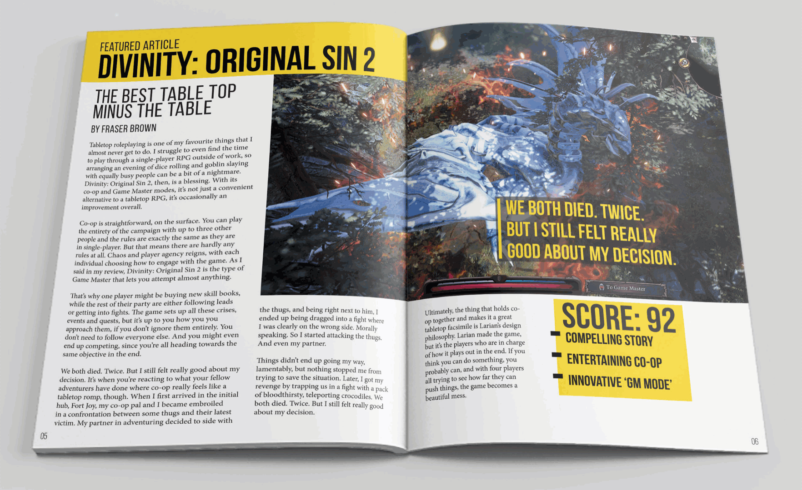
即：
.magazine {
width: 95vw;
display: grid;
grid-template-rows: 130px 2fr 1fr;
grid-template-columns: 1.5fr 1fr 1fr 1.5fr;
}
使用grid-template-rows和grid-template-columns定义了一个 3 x 4的网格（三行四列）。外侧的列比内侧的列要宽一些。第一行高度为130px，第二行是第三行的两倍高。不过内容（即HTML的结构略有点让你感到蛋疼）拆分有点小细节需要注意：
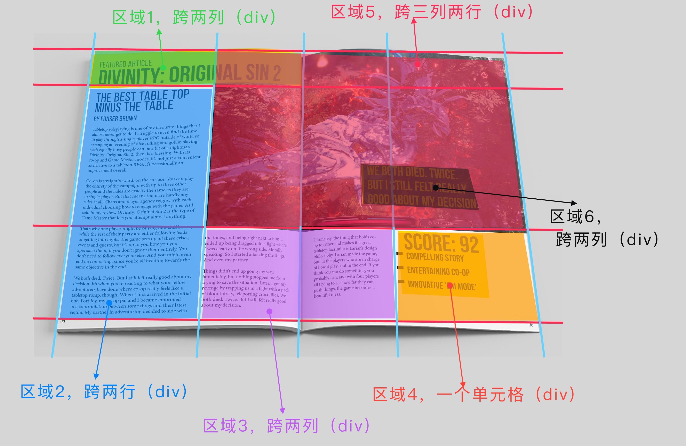
对应的 HTML：
<div class="magazine">
<!-- 区域1 -->
<div class="item green"></div>
<!-- 区域2 -->
<div class="item blue"></div>
<!-- 区域3 -->
<div class="item purple"></div>
<!-- 区域4 -->
<div class="item orange"></div>
<!-- 区域5 -->
<div class="item meired"></div>
<!-- 区域6 -->
<div class="item black"></div>
</div>
按上面示意图放置每个网格项目的位置：
.green {
grid-row: 1;
grid-column: 1 / 3;
}
.blue {
grid-row: 2 / 4;
grid-column: 1 / 2;
}
.purple {
grid-row: 3 / 4;
grid-column: 2 / 4;
}
.black {
grid-row: 2;
grid-column: 4;
}
.meired {
grid-row: 1 / 3;
grid-column: 2 / 5;
}
.orange {
grid-row: 3;
}
添加额外的样式，我们就实现了一个类似杂志的布局效果：
很有意思吧。我们仅使用网格重叠相关的特性就实现了类似杂志的布局。事实上，通过重叠的网格项目，我们还可以实现很多很酷的效果。感兴趣的同学也不妨一试。
定位的网格项目
虽然在网格项目重叠中，向大家阐述了使用明确指定网格项目位置的相关属性可以让网格项目重叠在一起，有点类似于在元素上显式设置了 position 属性值为非 static 的值的效果。即使是这样，我们在网格布局中，难免会在网格项目中使用 position。那么接下来，我们来看看网格布局系统中定位的网格项目会是怎样的一个表现。
在网格系统中，默认情况下，常规的网格项目会伸展以填充其区域（即大小和网格轨道尺寸一样）。但对于使用了定位（position为非static），情况并非如此，它将和普通的使用了position（值为非static）的元素类似，它会收缩以适应（收缩到内容大小）。
这一点很容易理解，但下面这个示例会让你更容易理解，也会更清楚。
.grid__container {
display: grid;
grid-template-columns: repeat(4, 1fr);
grid-template-rows: repeat(4, 10vh);
position: relative;
}
.grid__item:nth-child(1) {
grid-column: 1 / 3;
grid-row: 1 / 3;
}
.grid__item:nth-child(2) {
position: absolute;
grid-column: 1 / 3;
grid-row: 1 / 3;
}
这个示例中，我们创建了一个 4 x 4 的网格。网格项目i1（正常的网格项目）和网格项目i2（定位的网格项目）都以相同的规则（grid-column: 1 / 3; grid-row: 1 / 3;）把它们放置在网格中，即明确指定了网格项目放置的位置，同时也为这两个网格项目指定了相应的网格区域。只不过网格项目i2显式设置了position值为absolute（该网格项目是一个绝对定位的网格项目），此时网格项目i2会自动收缩到其内容大小（其尺寸适应内容）：
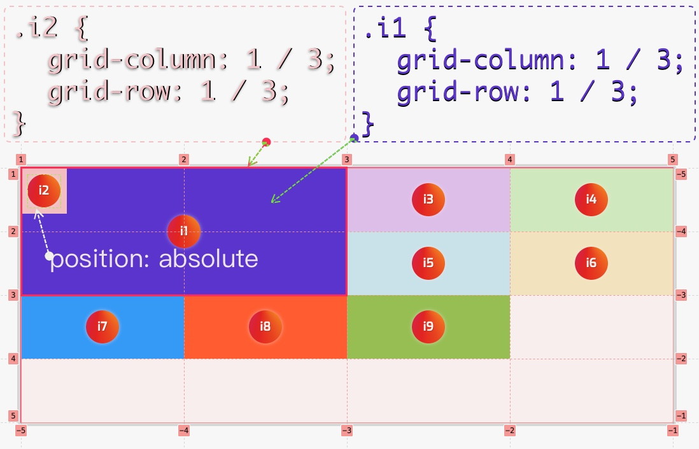
如果你通过浏览器开发者审查器查看时，将网格项目i2中position属性禁掉，你看到的是网格项目i2和网格项目i1在位于同一网格区域，而且相互重叠：
在这个示例中，我们仅是在网格项目i2上显式设置了position的值为absolute，并没有显式设置位移的值（top、right、bottom 和left的值），也没有显式设置网格项目的尺寸（width和 height)。如果我们显式在网格项目上设置width和height值，那么网格项目i2的尺寸将会有width和height来决定。比如下面这个示例：
.grid__item:nth-child(2) {
position: absolute;
grid-column: 1 / 3;
grid-row: 1 / 3;
z-index: 2;
width: var(--width);
height: var(--height);
min-width: 72px;
min-height: 72px;
}
拖动示例中的滑块，你将看到网格项目i2的宽高会做出相应变化：
注意，示例中
width和height值的单位是百分比，因此网格项目i2的宽高是相对于其父容器（即网格容器）的宽高进行计算。这将涉及到 CSS 中百分比的计算相关规则，感兴趣的同学可以阅读《CSS中百分比单位计算方式》一文。
同样的，我们可以在定位的网格项目上使用TRBL（即top、right、bottom、left）或 inset设置其距离网格容器的偏移距离，而且是相对于网格容器边缘（除非网格容器未显式设置position值为非static的值）：
.grid__item:nth-child(2) {
inset: var(--top) var(--right) var(--bottom) var(--left);
}
你会发现，默认情况之下inset值为 0 0 0 0，定位网格项目的位置是使用明确指定网格项目属性指定的位置，但改变 TRBL值之后（非0值），定位网格项目会相对于网格容器来定位。即使网格容器未显式设置position值为非static也是如此：
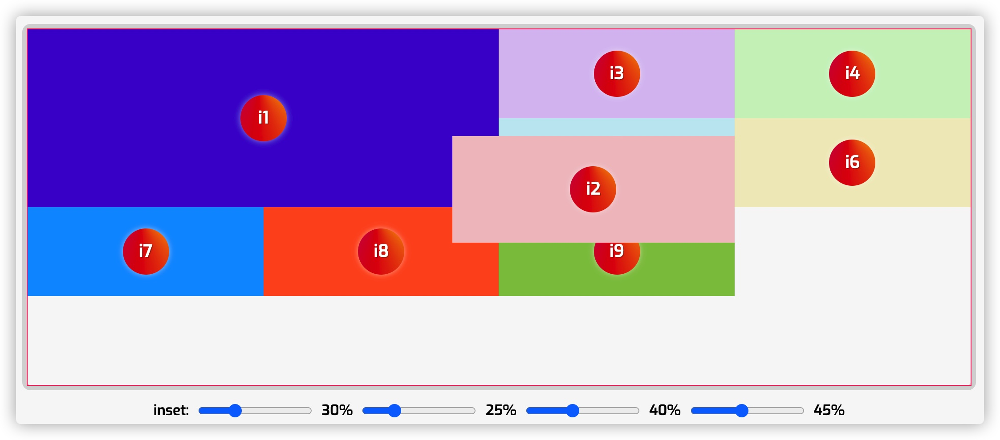
注意，到写这篇文章为止，这两个 Demo 的效果在 Chrome 和 Firefox 渲染不一致。
通过前面的学习，我们知道，在网格布局中如果使用明确指定网格项目位置的属性将网格项目放置在一个显式网格之外，会自动创建该网格项目放置所需的轨道来容纳该网格项目，此时即会创建一个隐式网格。然而，一个定位的网格项目是不能引用隐式网格中的网格线，因为会视为 auto。这也意味着，不能在隐式网格中放置一个定位的网格项目，同时定位网格项目不能创建隐式网格轨道，这是因为它们不参与网格的布局。
我们用一个例子来阐述这种现象。
.grid__container {
display: grid;
grid-template-columns: repeat(4, 1fr);
grid-template-rows: repeat(4, 10vh);
position: relative;
}
这个时候我们创建了一个 4 x 4 的网格：
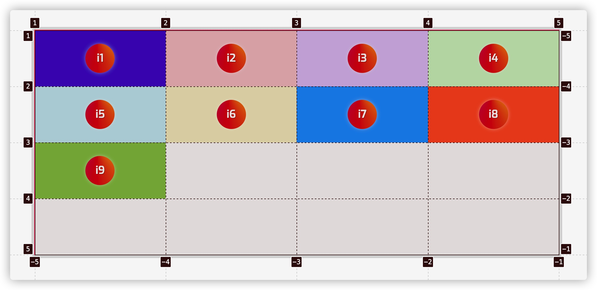
当我们把网格项目i1 和网格项目i2 按下面的位置来放置时，会创建一个隐式网格：
.grid__item:nth-child(1) {
grid-column: 1 / 3;
grid-row: 1 / 3;
}
.grid__item:nth-child(2) {
grid-column: 6 / 10;
grid-row: 1 / 3;
}
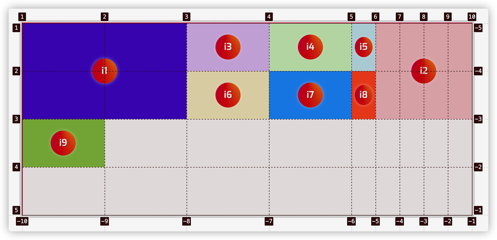
但我们在网格项目i2显式设置position值为absolute，即使不显式设置inset的值让网格项目i2偏移，也不会创建隐式网格：
.grid__item:nth-child(2) {
position: absolute;
grid-column: 6 / 10;
grid-row: 1 / 3;
}
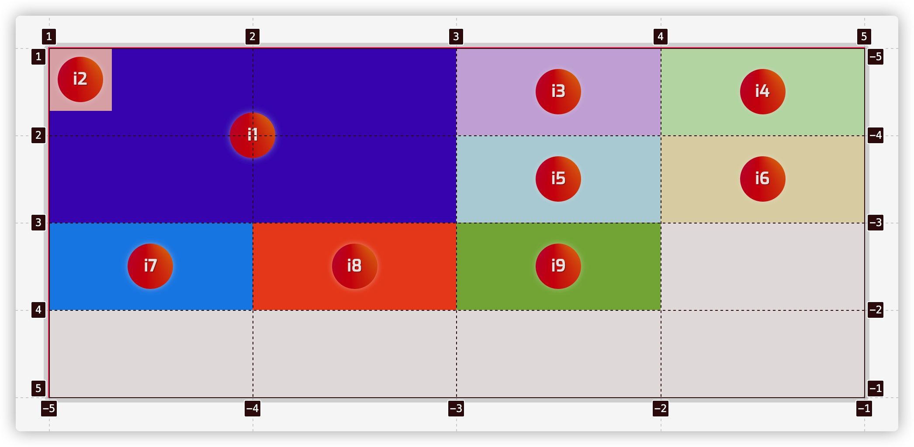
具体效果如下：
但是，要是有其他的网格项目创建了同样的一个隐式网格，则该定位网格项目可以放在明确指定的位置。把上面的示例稍作调整，在网格项目i3是使用下面的代码，创建同样的一个隐式网格：
.grid__container {
display: grid;
grid-template-columns: repeat(4, 1fr);
grid-template-rows: repeat(4, 100px);
position: relative;
grid-auto-columns: 50px;
}
.grid__item:nth-child(1) {
grid-column: 1 / 3;
grid-row: 1 / 3;
}
.grid__item:nth-child(2) {
position: absolute;
grid-column: 6 / 10;
grid-row: 1 / 3;
z-index: 2;
}
.grid__item:nth-child(3) {
grid-column: 6 / 10;
grid-row: 1 / 3;
}
如果用开发者工具审查网格布局，上面的代码创建了一个 4 x 9（四行九列）的隐式网格：
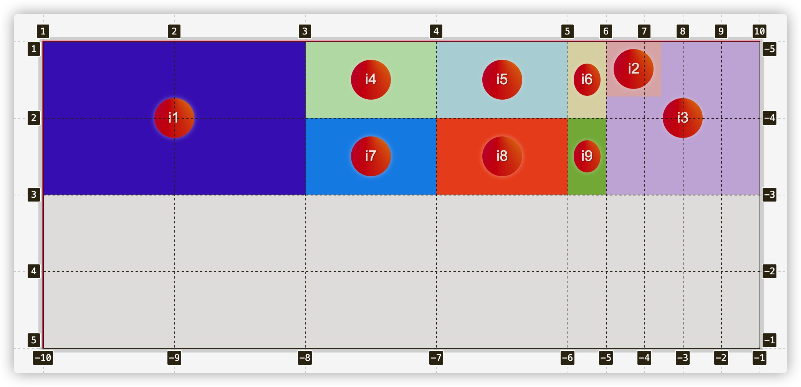
从这几个定位网格项目的示例中不难发现，在 CSS 网格布局中，被定位的网格项目并不会影响其他网格项目的位置，因为它们不参与网格项目自动放置的算法。因此，如果你有一个被定位的网格项目，并且你对一些普通网格项目使用了自动放置（根据网格项目自动放置算法放置的网格项目），那么预计被定位的网格项目会与其他网格项目相互重叠，并且可以通过z-index改变其z轴的位置。简单地说，在网格项目自动放置过程中，被定位的网格项目完全被忽略。
小结
到这里为止，CSS 网格布局中网格轨道尺寸设置，网格项目放置，网格项目自动放置算法，网格项目重叠和定位都介绍完了。但这里要特别提到的是，在网格布局中，网格轨道的尺寸并不代表网格项目自身元素的尺寸。换名话说，如果网格项目自身显式设置了尺寸，且和网格轨道尺寸不一致的时候，会有什么样的渲染行为呢？是不是很有意思。那么下一节，我将和大家一起来探讨这方面的话题。